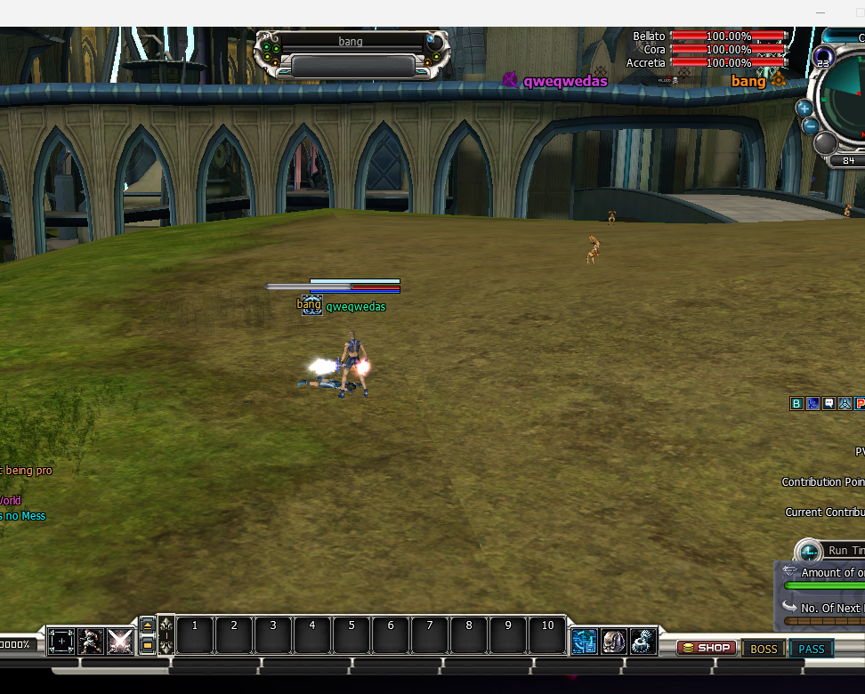

PvP Kill Feed
PvP Kill Feed

What it does — and why you would use it
The Kill Feed puts a short banner on every player’s screen the moment one player kills a player of an enemy race:
KillerName ⚔ KILLED ⚔ VictimNameEach name is tinted with its race colour (Bellato orange, Cora magenta, Accretia silver-white), the two are joined by a KILLED ribbon, and the killer’s and victim’s race emblems sit beside their names. A plain “X KILLED Y” line is written to the chat log as well, so the kill is still recorded even if a player had the banner hidden.
Use it to:
- Make PvP feel — every kill across the server is announced live, the way an esports stream shows a kill feed.
- Call out standout players and build rivalries between the three races.
- Give war and chip-battle participants instant feedback on who is on top.
It is a server setting with a client half: the Zone server reads KillFeed.ini, and on each kill it broadcasts the banner and the current look / position settings to every online client. Players cannot turn it on or off, or restyle it, from their own machine — what the zone sends is what they see.
| Part | Where it lives | Its job |
|---|---|---|
| Server switch + look | .Server\Zoneserver\RF_Bin\Modules\KillFeed\KillFeed.ini | Master on/off, how long each banner holds, and every size / colour / position setting. |
| Client half | No client file. The zone pushes each kill (with the current settings) to every client, which draws the banner. Both the Zone server and the game client must be the current build. | |
| Optional artwork | .Client\SpriteImage\common\PvpNotices.spr | The KILLED ribbon and the three race emblems. Leave it out and the banner falls back to plain coloured text. |
How to activate it
- Open the file. .Server\Zoneserver\RF_Bin\Modules\KillFeed\KillFeed.ini in Notepad.
- Turn it on. Set
[General] Enable = 1(with0no kill banners are shown — the stock behaviour). - Choose how long it stays. Set
[General] HoldSecsto the number of seconds each banner is on screen before it fades (1–60;5is a good default). - Save — no restart. A running server hot-reloads the file; because the settings ride along with every kill, your changes apply to the very next kill with no restart and no re-login.
- Test it. Have one character kill an enemy-race player — every client shows the banner and a chat line.
KillFeed.ini is required when the Zone server starts — deleting it stops the server from booting. To hide the banners, set [General] Enable = 0 instead of removing the file.The config file
One file, two sections. [General] is the on/off switch and timing; [UI] is everything about how the banner looks and where it appears. Every value is clamped to a safe range — a number out of range is reported in the Module Logs and the nearest allowed value is used.
[General]
| Key | Default | Meaning |
|---|---|---|
Enable | 1 | 1 = broadcast a banner on every enemy-race PvP kill; 0 = off (stock behaviour). |
HoldSecs | 5 | Seconds each banner stays on screen before fading (1–60). |
[UI] — look & layout
| Key | Default | Meaning |
|---|---|---|
MaxOnScreen | 3 | How many banners are stacked on screen at once (1–10); extra kills queue and appear as older ones fade. |
BannerWidth / BannerHeight | 128 / 16 | Size of the KILLED ribbon artwork in pixels (source art is 256×32, so smaller scales it down). |
EmblemSize | 22 | Size of each race emblem icon in pixels (source art is 24×24). |
RowHeight | 18 | Full height of one banner row; the artwork is vertically centred in it. |
NameScalePercent | 75 | Player-name size as a percent of the 16-pixel base font (75 ≈ 12px). Raise it if names look small next to the art, lower it otherwise. |
EmblemNameGap / NameBannerGap / LineGap | 4 / 6 / 6 | Spacing in pixels: emblem↔name, name↔ribbon, and between stacked rows. |
SegGap | 12 | Fallback text spacing, used only when the PvpNotices.spr artwork is missing. |
WordColor | FFFFFF | Colour of the KILLED word, as 6-digit RRGGBB hex. |
BellatoColor / CoraColor / AccretiaColor | FF8A1E / CC3CD6 / EAEAF2 | Name colour for each race, as RRGGBB hex. Defaults match the emblem colours baked into the artwork. |
Where the banner appears
Three keys in [UI] control position: Anchor picks a preset spot and OffsetX / OffsetY fine-tune it.
Anchor | Where the banner sits |
|---|---|
0 (default) | Under the race-chip HP bars, right-aligned — tucked in below the Belato / Cora / Accretia bars at the top-right. ChipGap sets the vertical gap in pixels (a negative value pulls it up over the bars). When the chip HP HUD is hidden it falls back to the OffsetY pixel. |
1 | Top-centre of the screen, in the classic megaphone band. |
2 | A custom screen pixel given by OffsetX / OffsetY. OffsetX = -1 means right-align to the screen edge; any other value is the absolute left pixel. |
Tuning tip: if the names look too big next to the artwork, lower NameScalePercent; if the ribbon / emblems look too small, raise BannerWidth, BannerHeight and EmblemSize. Save and the next kill shows the change instantly.
The banner artwork (optional)
The KILLED ribbon and the three race emblems come from one small sprite file on the client:
.Client\SpriteImage\common\PvpNotices.spr (+ its .rep)- With the artwork the banner shows the ribbon between the two names and each player’s race emblem beside their name (as in the screenshot above).
- Without it nothing breaks — the client draws a clean text-only banner (Killer KILLED Victim) in the race colours instead. All the size / position keys still apply.
KillFeed.ini on the zone, so every player sees the same banner. The .spr file is only the picture it paints with — players who have it get the ribbon and emblems, players who do not get the text fallback, but always the same names, colours and placement you configured.